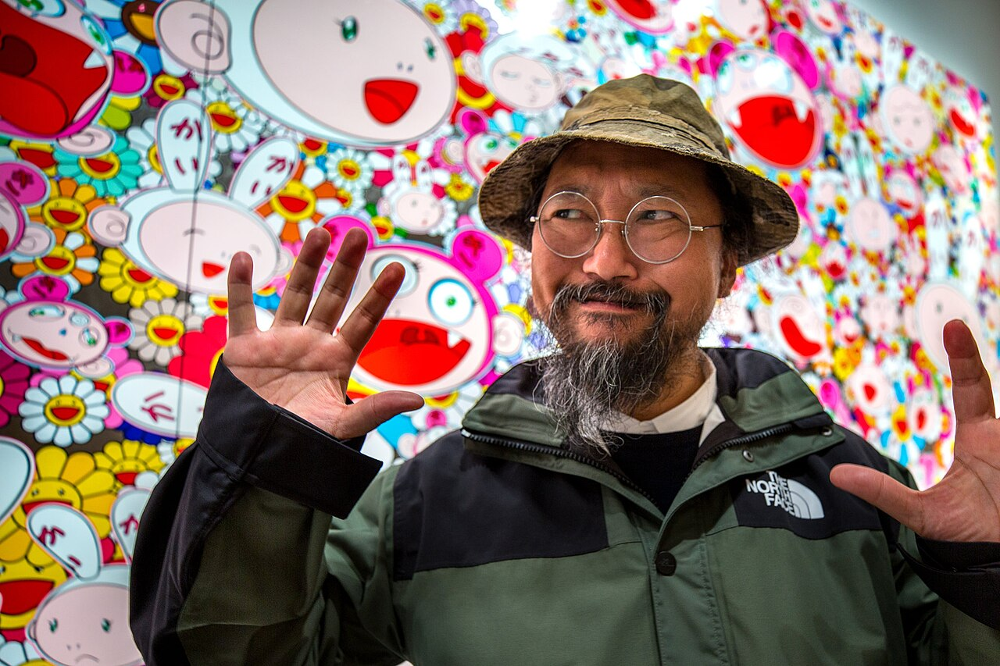
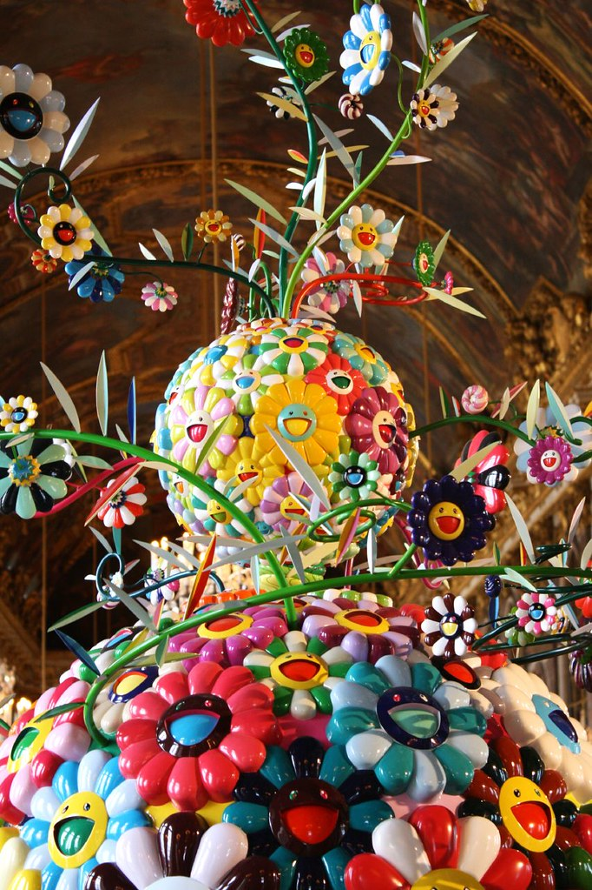
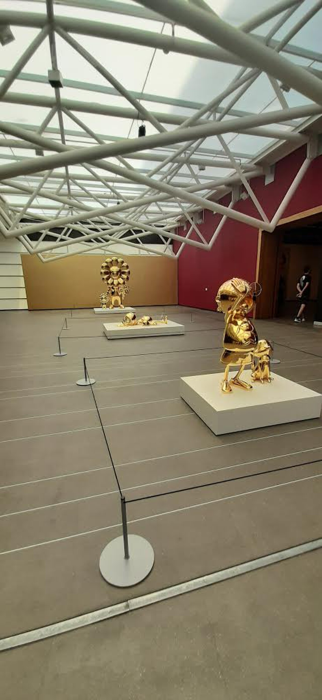

第 06 課 / 17 分鐘 / 藝術
超扁平
村上隆 Takashi Murakami（1962 年生）

三分鐘版本
村上隆 1962 年 2 月 1 日生於東京。他在東京藝術大學研讀日本畫（nihonga）——一種日本傳統繪畫——並於 1993 年完成博士課程。這段訓練很重要：他能以傳統語彙作畫，也能解釋為什麼傳統語彙與動漫共享同一個畫面空間。
1990 年代，他成為同世代最醒目的日本藝術家，創造出 DOB 等角色，並展開一種模糊了繪畫、雕塑、動畫與周邊商品界線的實踐。2000 年，他發表論文《超扁平日本藝術論》；2001 年，他在 MOCA 的 Pacific Design Center 策劃了展覽《超扁平》。同一年，他創立 Kaikai Kiki——這家公司經營他的工作室、代理其他藝術家，並製作版數作品。
2000 年代是一連串高知名度的合作與美術館展覽：Louis Vuitton（2003）、日本協會的《Little Boy》（2005）、凡爾賽宮（2010），以及《五百羅漢圖》——一幅動用龐大團隊、長達 100 公尺的繪畫，先在多哈展出，2015–16 年再到森美術館。2024 年，京都市京瓷美術館舉辦《物怪京都》(Mononoke Kyoto)，這場大型回顧把超扁平的論證帶回傳統繪畫的城市。
年代與背景資料：Kaikai Kiki；MOCA《超扁平》；高古軒。
一句話說超扁平
超扁平是一個主張：日本的視覺文化——江戶時代的繪畫、浮世繪版畫、漫畫、動畫、平面設計，以及消費它們的御宅族文化——共享一個扁平化、二維的畫面空間，而這種扁平並不是缺乏深度，而是另一種深度：一個你可以走進去的表面。
村上隆把這條線從北齋一路拉到 1970 年代的電視動畫。這個主張刻意帶有挑釁性：它把美術館的正典與便利商店的漫畫放在同一個歷史平面上。它也給了他一套關於自身作品的理論——那些花、DOB 這個角色、微笑的骷髏，全都是「超扁平」的，因為它們扁平、可重複，且情緒上曖昧。
「超扁平……能創造出一種逃離日常壓力與期待的出口。」 村上隆的論點，由 MOCA 轉述
「逃離」這個詞很重要。村上隆並不只是在頌揚動畫。他描述的是一種文化——用可愛與扁平來管理壓力：工作的壓力、學校的壓力、擁擠社會的壓力。那些花是開心的。那份開心正是症狀。


三件必知作品
1. DOB（1993–）
DOB 是一個既是角色、也是自畫像的形象：一個圓滾滾、露著牙的頭，上頭寫著 D-O-B，名稱源自一句日文的無意義片語。他出現在繪畫、雕塑、動畫與周邊商品中。DOB 是村上隆方法最清楚的例子：一個可愛的吉祥物，同時能承載一幅美術館繪畫、一個玩具，以及一份對市場的批判。
2. 《我孤獨的牛仔》(My Lonesome Cowboy)（1998）
一尊真人大小、赤裸的動漫人形，甩著由精液構成的套索——刻意誇張地融合了御宅族的幻想與美國西部片的圖像。它在 2008 年於蘇富比以 1,520 萬美元售出，當時創下村上隆的紀錄。這件雕塑是對整套路徑的一場測試：它究竟是對御宅經濟的批判，還是為同一套經濟而生的一件奢侈品？村上隆的答案通常是「兩者皆是」。
3. 《五百羅漢圖》（2012）
一幅 3 × 100 公尺的繪畫，由一群藝術系學生與助手合力完成，先在多哈展出，2015–16 年再到森美術館。題材是佛教的羅漢，但真正的題材是它的尺幅與生產線：一幅前現代的宗教圖像，以當代的工作室系統製作出來。在 2011 年的災難之後，它也是村上隆試圖創作一幅足以承接悲傷的繪畫。

問題所在（也正是重點）
村上隆是這門課裡，讓藝術市場的問題無從迴避的藝術家。他經營一家公司。他製作版數。他與 Louis Vuitton 合作。他的工作室有助手。他的角色出現在鑰匙圈上。評論家的本能反應是說：這些周邊商品汙染了藝術。但村上隆的實踐則說：這道區分一直都是假的——那個吉祥物、那幅畫、那個鑰匙圈，是由同一種文化、為同一群觀眾、以同一套視覺語言做出來的。
這並沒有解決爭論。它讓爭論本身成了主題。最好的村上隆作品，是那些你能感受到張力的作品——手工與複製之間、神聖與可愛之間、批判與販售之間。《五百羅漢圖》站在手工的那一側；鑰匙圈站在另一側；而有趣的作品，就在兩者之間。
觀看影片
親自觀賞村上隆的地方
- Kaikai Kiki 畫廊，東京——工作室在元麻布的自營畫廊；可留意當期展覽。
- 森美術館，東京——《五百羅漢圖》（2015–16）的展出地；至今仍是這座城市最好的大型當代藝術站點。
- 京都市京瓷美術館——2024 年的《物怪京都》回顧展；可留意目前的檔期。
- 波士頓美術館——館方展出過村上隆；可留意目前的館藏與展覽。
- 香港 M+——區域性館藏；可與奈良美智、草間彌生一同觀賞。
請向 Kaikai Kiki 與森美術館查詢目前村上隆的檔期；2024 年的京都展是最近一次的大型回顧。
自我檢測
目前 0 / 0 題答對1. 超扁平描述的是什麼？
2. 哪個角色是村上隆的分身？
3. 2003 年他與哪個精品品牌合作？
一手資料
先讀 MOCA 關於《超扁平》的頁面，再讀村上隆收錄於 2000 年圖錄中的文章。若想看市場的論述，《©Murakami》圖錄（布魯克林美術館，2008）是最能讓美術館與周邊商品同處一室的地方。
要記住的一件事：村上隆的偉大與他的問題是同一件事：他讓藝術與商品之間的界線消失了。